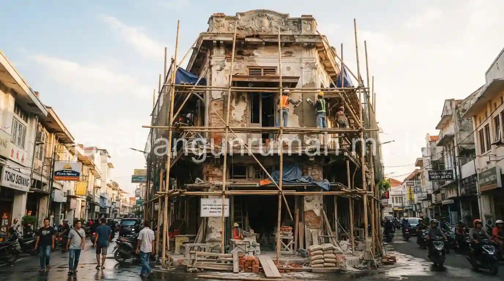

Daftar Isi
Jasa renovasi ruko dan kantor Surabaya melayani revitalisasi bangunan komersial mulai dari pembaruan interior, pengecatan ulang eksterior, hingga perbaikan struktur yang mengalami kerusakan akibat usia bangunan.
Apa Saja Layanan Renovasi Ruko dan Kantor yang Dilayani di Surabaya?
Layanan jasa renovasi ruko Surabaya mencakup tiga kategori utama:
- Pembaruan interior ruang usaha agar lebih menarik bagi pelanggan, termasuk penataan ulang tata letak dan penggantian elemen dekoratif
- Pengecatan ulang eksterior untuk memperbarui tampilan bangunan dan meningkatkan kesan profesional dari luar
- Perbaikan struktur seperti dinding retak atau atap bocor pada bangunan ruko yang sudah berusia lama
Selain tiga layanan utama tersebut, tim juga menangani penataan ulang tata letak ruang usaha apabila pemilik ingin mengubah fungsi sebagian area, misalnya mengubah gudang belakang menjadi ruang tambahan untuk operasional bisnis.

Bagaimana Proses Renovasi Dijalankan agar Operasional Usaha Tetap Berjalan?
Proses renovasi ruko direncanakan secara bertahap per area agar operasional usaha tidak terganggu secara total:
- Sebagian ruang usaha tetap dapat beroperasi normal sementara area lain sedang dalam proses perbaikan
- Jadwal kerja disesuaikan dengan jam operasional usaha, misalnya pekerjaan yang menimbulkan kebisingan dijadwalkan di luar jam sibuk pelanggan
- Koordinasi jadwal menjadi bagian penting dari perencanaan awal sebelum pekerjaan fisik dimulai
Pendekatan bertahap ini sangat penting terutama untuk ruko yang tidak memungkinkan tutup total selama renovasi berlangsung, sehingga pendapatan usaha tetap dapat berjalan selama proses perbaikan.
Berapa Kisaran Waktu Pengerjaan Renovasi Ruko Skala Kecil hingga Menengah?
Waktu pengerjaan renovasi ruko bergantung pada skala pekerjaan:
- Perbaikan ringan dan pengecatan ulang: beberapa hari hingga satu minggu
- Renovasi interior menyeluruh: dua hingga empat minggu tergantung luas area
- Perbaikan struktur kompleks: beberapa minggu hingga lebih dari satu bulan, tergantung tingkat kerusakan
Estimasi waktu yang lebih akurat sebaiknya diperoleh melalui survey lokasi langsung, karena kondisi setiap bangunan berbeda, terutama untuk ruko dengan usia bangunan yang sudah cukup lama dan berpotensi memiliki masalah struktural tersembunyi.
Wilayah layanan mencakup Surabaya dan sekitarnya. Bagi pemilik ruko atau kantor kecil di Surabaya yang ingin merevitalisasi bangunan usaha, dapat menghubungi jasa renovasi bangunan profesional untuk mengajukan survey lokasi gratis dan mendapatkan estimasi pengerjaan sesuai kebutuhan usaha Anda.